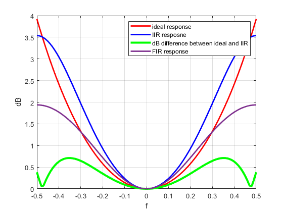

fprintf('NEW INSTANCE');
fprintf('\n');
Fs = 1;
f = linspace(-0.5,0.5);
H_ideal = abs((pi()*f/Fs) ./ sin(pi() * f / Fs));
test_a1 = 0;
test_b0 = 0;
test_error = inf;
for a1 = -0.999:0.1:0.999
for b0 = 0.001:0.1:5
H_IIR = abs(b0 ./ sqrt(1 + a1^2 + 2 * a1 * cos(2 * pi * f)));
error = max(abs(20 * log10(H_IIR) - 20 * log10(H_ideal)));
if error < test_error
test_error = error;
test_a1 = a1;
test_b0 = b0;
end
end
end
fprintf('a1: %.5f\n', test_a1);
fprintf('b0: %.5f\n', test_b0);
H_IIR_best = abs(test_b0 ./ sqrt(1 + test_a1^2 + 2 * test_a1 * cos(2 * pi * f)));
figure;
ideal_dB = 20 * log10(H_ideal);
IIR_dB = 20 * log10(H_IIR_best);
H_FIR = abs( exp(j*-2*pi().*f)) .* abs(9/8 - (1/8)*cos(2*pi().*f));
FIR_dB = 20 * log10(H_FIR);
dB_diff = abs(ideal_dB - IIR_dB);
plot(f, ideal_dB, 'r', 'LineWidth', 2); hold on;
plot(f, IIR_dB, 'b', 'LineWidth', 2);
plot(f,dB_diff, 'g', 'LineWidth', 3);
plot(f,FIR_dB, 'Linewidth',2);
xlabel('f');
ylabel('dB');
legend('ideal response', 'IIR resposne', 'dB difference between ideal and IIR', 'FIR response');
grid on;
NEW INSTANCE
a1: 0.20100
b0: 1.20100
